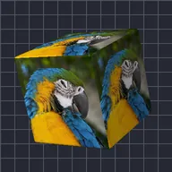

Kubo

Binabalot ang layer sa bawat mukha ng umiikot na kubo na may bilugang gilid at ilaw.
Binabalot ng Kubo ang layer sa mga mukha ng isang 3D na kubo. Pinaiikot ito ng Rotasyon X, Rotasyon Y at Rotasyon Z (i-animate ang mga ito para sa umiikot na kubo), binabago ng Laki at Iskala kung gaano ito kalaki, ng Perspektibo ang lalim, at ng Shading, Anggulo ng ilaw at Kinang ang ilaw. Tingnan ang Mga camera layer at 3D.
Mga Setting
| Setting | Uri | Saklaw | Default |
|---|---|---|---|
| Rotasyon X | Anggulo | -3600° hanggang 3600° | -20° |
| Rotasyon Y | Anggulo | -3600° hanggang 3600° | -35° |
| Rotasyon Z | Anggulo | -3600° hanggang 3600° | 0° |
| Laki | Numero | 0.05 hanggang 5 | 0.7 |
| Pagpapakinis | Numero | 0 hanggang 1 | 0.15 |
| Posisyon | Punto (X, Y) | -5000 px hanggang 5000 px | 0 px, 0 px |
| Iskala | Numero | 0.05 hanggang 10 | 1 |
| Perspektibo | Numero | 0 hanggang 1 | 0.5 |
| Shading | Numero | 0 hanggang 1 | 0.6 |
| Anggulo ng ilaw | Anggulo | -3600° hanggang 3600° | 135° |
| Kinang | Numero | 0 hanggang 1 | 0.3 |
| Ilaw | Pagpipilian | Klasiko, Malambot, Direkta | Klasiko |
| Ambient | Numero | 0 hanggang 2 | 0.03 |
| Taas ng ilaw | Numero | 0 hanggang 20 | 3 |
| Kulay ng ilaw | Kulay | – | #FFFFFF |
| Kintab | Numero | 1 hanggang 200 | 15 |
| Texture | Pagpipilian | I-fit, I-tile, I-stretch | I-fit |
| Ulitin X | Numero | 0.01 hanggang 100 | 1 |
| Ulitin Y | Numero | 0.01 hanggang 100 | 1 |
| Mirror | Naka-on o naka-off | – | Naka-off |
| Anggulo ng texture | Anggulo | -3600° hanggang 3600° | 0° |
| Offset ng texture | Punto (X, Y) | -100 hanggang 100 | 0, 0 |
| Crop ng texture | Numero | 0.05 hanggang 10 | 1 |
| Anchor ng texture | Pagpipilian | Gitna, Sulok | Gitna |
| Estilo | Pagpipilian | Klasiko, Karaniwan | Klasiko |